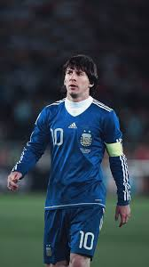

|  | Goal | 0 |
| Assistant | 1 | |
| MOT | - | |
| Record | Quarter Finals |
At the 2010 FIFA World Cup, Lionel Messi did not score for Argentina, but he did provide one assist. He started all five of Argentina's matches, playing a total of 450 minutes. Argentina progressed successfully through the group stage, and in the last 16, they defeated Mexico 3–1. In that match, Messi provided the assist for Carlos Tevez's first goal. However, in the Quarter-Finals, Argentina were defeated 4–0 by Germany, and were eliminated from the tournament. Although Messi did not score in the tournament, his pace, creativity, and dribbling skills were recognized by FIFA as one of the top 10 players of the tournament. While there is no exact information about his Man of the Match award, you can watch the video below to see footage of Messi playing during that time.